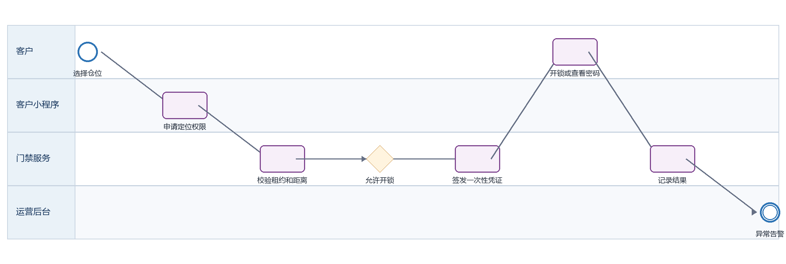
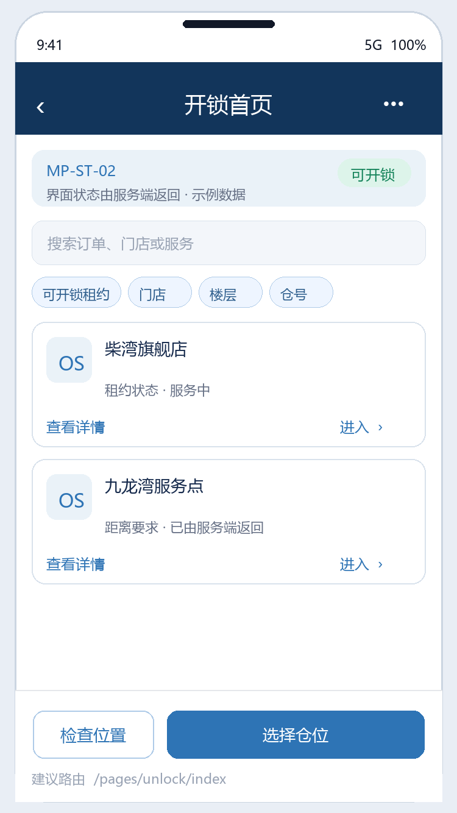
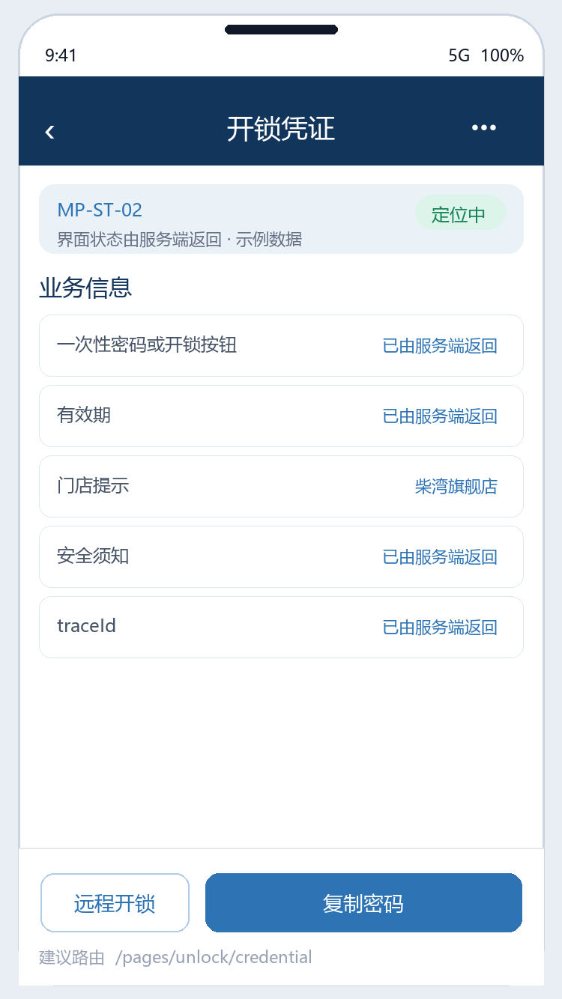

迷你仓开锁 PRD
下载 Word 文档迷你仓开锁 PRD
客户小程序研发详细需求规格 · V2.0 · 2026-09-08
定义客户对有效租约仓位进行定位校验、查看临时门禁凭证与开锁审计的研发规格。
| 属性 | 内容 |
|---|---|
| 文档编号 | MP-ST-02 |
| 适用端 | 客户小程序、运营后台、工单小程序及领域服务 |
| 范围 | 可开锁仓位选择、租约资格校验、地理围栏、临时密码或远程开锁、失败降级、安全审计。 |
| 不在本模块范围 | 门禁设备协议和硬件施工。 |
1 目标与边界
1.1 本期范围
可开锁仓位选择、租约资格校验、地理围栏、临时密码或远程开锁、失败降级、安全审计。
1.2 不在本模块范围
门禁设备协议和硬件施工。
1.3 角色与系统责任
| 角色或系统 | 职责 |
|---|---|
| 客户 | 浏览、选择、签约、付款、提交申请、查询进度 |
| 客户小程序 | 采集意图并展示服务端状态，不自行决定价格、库存、资格或审批结果 |
| 运营后台 | 维护主数据、价格、库存、可操作项、审批、异常处理和人工改派 |
| 工单小程序 | 承接送取、验收、搬仓、清仓等线下任务，回传节点、附件和异常 |
| 领域服务 | 保存订单、租约、箱体、预约、支付与合同的权威状态并发布事件 |
2 BPMN 业务流程

圆形表示开始或结束事件，圆角矩形表示任务，菱形表示服务端判断。
跨端节点必须先写入领域服务，再由事件刷新客户侧时间线。
3 状态机与准入
| 状态码 | 客户文案 | 进入条件 | 下一步 |
|---|---|---|---|
| ELIGIBLE | 可开锁 | 租约有效且无欠费限制 | 定位校验 |
| LOCATING | 定位中 | 获取客户位置与精度 | 通过或失败 |
| AUTHORIZED | 已授权 | 一次性凭证有效 | 执行开锁 |
| OPENED | 已开锁 | 设备回执成功 | 审计完成 |
| DENIED | 已拒绝 | 超距、欠费、租约无效或风控 | 联系客服 |
| EXPIRED | 凭证失效 | 超过有效期或已使用 | 重新申请 |
状态码是跨端契约，中文文案不得作为业务判断条件；写操作必须携带聚合版本并处理409冲突。
4 页面与交互
本节界面截图依据页面字段、状态和操作规则生成，用于前端布局、接口联调和验收对照；截图中的业务数据为示例，权威值必须来自服务端。
4.1 开锁首页
| 属性 | 要求 |
|---|---|
| 建议路由 | /pages/unlock/index |
| 入口 | 底部开锁、订单详情 |
| 页面字段 | 可开锁租约、门店、楼层、仓号、租约状态、距离要求、欠费限制 |
| 主要操作 | 选择仓位、检查位置、联系客服 |
| 通用状态 | 骨架屏、空态、无网络、超时、无权限、数据已变化、提交中、提交成功和提交失败分别实现 |

4.2 开锁凭证
| 属性 | 要求 |
|---|---|
| 建议路由 | /pages/unlock/credential |
| 入口 | 校验通过 |
| 页面字段 | 一次性密码或开锁按钮、有效期、门店提示、安全须知、traceId |
| 主要操作 | 复制密码、远程开锁、重新获取；禁止截屏时需按平台能力提示 |
| 通用状态 | 骨架屏、空态、无网络、超时、无权限、数据已变化、提交中、提交成功和提交失败分别实现 |

5 业务规则
只有本人有效租约且 allowedActions 包含 UNLOCK 才展示入口。
默认地理围栏50米，服务端按门店配置判定；客户端定位仅供请求参数。
凭证一次性、短时有效、不得落本地持久缓存；切后台超过有效期必须重新申请。
每次申请和执行记录 customerId、rentalId、unitId、设备、位置精度、结果、失败原因与traceId。
定位失败时不得绕过校验；可展示门店人工验证联系方式。
6 接口契约
| 方法 | 接口 | 用途 | 幂等要求 |
|---|---|---|---|
| GET | /rentals/unlock-eligible | 查询本人可开锁租约 | 否 |
| POST | /access/location-check | 服务端校验位置与资格 | 是，requestId |
| POST | /access/credentials | 签发一次性门禁凭证 | 是，requestId |
| POST | /access/open | 执行远程开锁并等待设备回执 | 是，credentialId |
通用响应包含code、message、data、traceId和serverTime。
金额使用整数最小货币单位；写接口校验登录身份、资源归属、幂等键和聚合版本。
错误码区分参数、资格、并发、锁定、支付确认、权限和服务不可用。
7 跨端交互和数据一致性
| 方向 | 规则 |
|---|---|
| 小程序到后台 | 只调用BFF或领域服务；后台通过同一业务编号处理。 |
| 后台到小程序 | 后台写领域状态并发布事件，小程序刷新权威状态。 |
| 后台到工单小程序 | 线下任务携带workOrderId、orderId、SLA和附件要求。 |
| 工单到客户小程序 | 扫码、附件和异常先回传领域服务，再生成客户可见时间线。 |
| 消息通知 | 只携带业务编号与深链，不下发敏感合同或门禁凭证。 |
7.1 领域事件
access.credential_issued
access.open_succeeded
access.open_failed
access.risk_blocked
8 异常与恢复
| 场景 | 识别条件 | 客户侧与后台处理 |
|---|---|---|
| 定位权限拒绝 | 无位置 | 解释用途并允许去设置或联系门店 |
| 位置精度不足 | accuracy超阈值 | 提示移动到门店入口后重试 |
| 设备离线 | 门禁服务返回503 | 展示临时密码或人工验证，依门店配置 |
| 租约受限 | 欠费或已结束 | 隐藏凭证并展示业务原因码 |
9 非功能与安全
列表首屏P95不超过2秒，详情P95不超过1.5秒；长流程返回受理结果和异步进度。
敏感字段最小化展示，日志脱敏，下载资产使用短时签名URL。
所有状态变更记录前后值、操作者、来源端、原因码、时间和traceId。
支持简体中文、繁体中文、英文；日期、货币和地址按香港业务规范展示。
10 埋点与指标
| 事件 | 触发 | 关键属性 |
|---|---|---|
| page_view | 进入页面 | pageCode、source、orderId、businessType |
| action_click | 点击主要操作 | actionCode、statusCode、orderVersion |
| submit_result | 写操作完成 | requestId、result、errorCode、durationMs、traceId |
| flow_step_changed | 业务节点变化 | fromStatus、toStatus、eventId、operatorType |
11 验收标准
AC-01 非本人或已结束租约无法获取凭证。
AC-02 重复点击开锁不会生成多次有效凭证。
AC-03 超出地理围栏时服务端拒绝且客户端不展示密码。
AC-04 所有成功和失败开锁均可在后台按traceId查询。
12 研发交付清单
| 角色 | 交付物 |
|---|---|
| 产品与设计 | 页面状态稿、字段字典、三语文案和验收用例 |
| 小程序前端 | 页面、组件、登录恢复、状态处理、埋点和错误恢复 |
| 后端 | OpenAPI、状态机、幂等、权限、事件、补偿和审计 |
| 运营后台 | 配置、审批、异常处理、重试和人工兜底 |
| 工单小程序 | 任务、扫码、附件、节点回传和异常上报 |
| 测试 | 端到端、并发、权限、弱网、重复事件和补偿验证 |